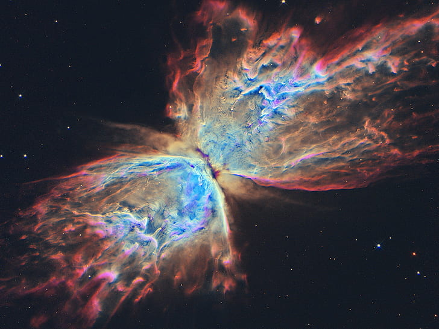

Feito por A.C.
Supernova, a explosão que marca o fim de uma estrela.
Para entendermos como uma supernova funciona, primeiro precisamos entender como funciona uma estrela.
O começo de uma estrela
As estrelas surgem de nuvens de poeira e gás que sofreram algum tipo de perturbação, como por exemplo a morte de outra estrela proxima.
Então, começam a surgir aglomerados de poeira e gás no centro da nuvem, então por causa da grande quantia de massa e a temperatura sempre aumentando, esses aglomerados começam a entrar em colapso.
Estes colapsos entre os aglomerados faz com que seja arrastado cada vez mais massa para dentro de si até acabar criando um nucleo que é chamado de protoestrela, todo este processo leva milhões de anos.
Então, mesmo após a criação do nucleo, a protoestrela continua arrastando mais massa até se estabilizar e finalmente se tornar uma estrela.
O fim de uma estrela
Entendido como uma estrela surge, podemos explicar como ela acaba. As estrelas são compostas basicamente por hidrogenio e hélio, e ela vai consumindo este combustivel ao longo de sua vida, até que ele se esgote, ou seja, até todo hidrogenio acabar. Isso então ocasiona no fim de uma estrela, porém uma estrela pode ter diferentes fins dependendo de sua massa.
Para que quando uma estrela morra ela se torne uma supernova, ela precisa ter uma massa maior do que o sol, por exemplo.
Então, após acabar o hidrogenio, ela começa a transforma o hélio em elementos mais pesados, como enxofre e o ferro. Então, assim que o nucleo é fundido em ferro ele acaba entrando em colapso por causa de sua propria gravidade, e começa a cair sobre si mesmo, fazendo a parte externa da ex-estrela ser expulsa violentamente, gerando uma explosão extremamente linda que pode ocasionar no nascimento de outras estrelas! O seu nucleo se torna denso e compacto em questões de minutos, fazendo os prótons e os elétrons se fundem e formam nêutrons. Neste estado ela ja é chamada de "estrela de nêutrons", porém dependendo da massa da estrela que morrer, ao invés dela se tornar uma estrela de nêutrons, ela se torna um buraco negro.
Aurora boreal, um fenômeno atmosférico extremamente lindo!

Alem de emitir luz, o sol também emite ventos solares repletos de particulas carregadas de energia, essas particulas se chamam plasma, e são essas particulas que provocam o fenômeno de luz ao entrarem em contato com os campos magnéticos dos polos.
As principais cores formadas por estes fenômenos são o verde o vermelho.
O verde é formado atravez da emissão dos átomos de oxigênio em altas camadas atmosféricas.
Ja o vermelho é formado atravez da emissão dos átomos de nitrogenio e oxigênio nas baixas camadas atmosféricas.